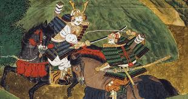

La era samurai en Japón, que abarca desde el siglo XII hasta el siglo XIX, fue un período marcado por la presencia de los guerreros samuráis, quienes desempeñaron un papel crucial en la historia y cultura japonesa. Los samuráis eran miembros de la clase guerrera que seguían un código de honor conocido como Bushido, que enfatizaba la lealtad, el coraje y la disciplina.
Durante este tiempo, Japón experimentó una serie de guerras civiles, luchas por el poder y cambios políticos significativos. El período Edo (1603-1868) fue especialmente notable, ya que trajo consigo un largo período de paz y estabilidad bajo el shogunato Tokugawa, donde los samuráis se convirtieron en administradores y funcionarios más que en guerreros activos.
La era samurai también dejó un legado cultural duradero, incluyendo artes marciales, literatura, teatro y filosofía. Aunque los samuráis perdieron su estatus oficial con la Restauración Meiji en 1868, su influencia sigue siendo evidente en la sociedad japonesa contemporánea.
Los samuráis eran conocidos por su destreza en el combate, especialmente con la katana, y por su dedicación a la perfección en todas las áreas de la vida. La figura del samurái ha sido romantizada en la cultura popular, convirtiéndose en un símbolo de honor y valentía.
En resumen, la era samurai en Japón fue un período fascinante que moldeó la identidad nacional y cultural del país, dejando un impacto duradero que aún se siente hoy en día.